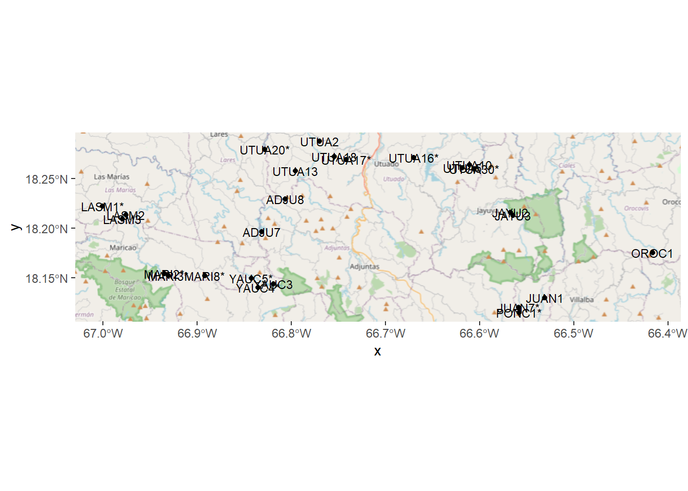
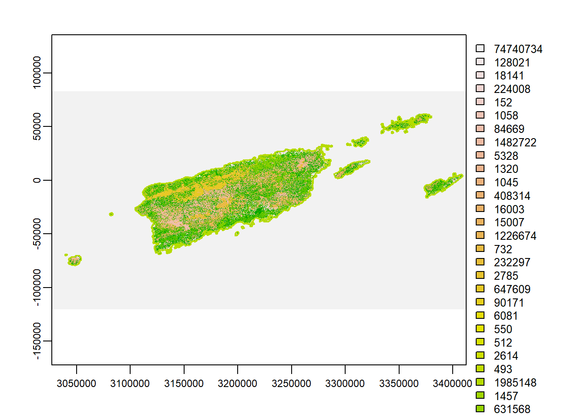
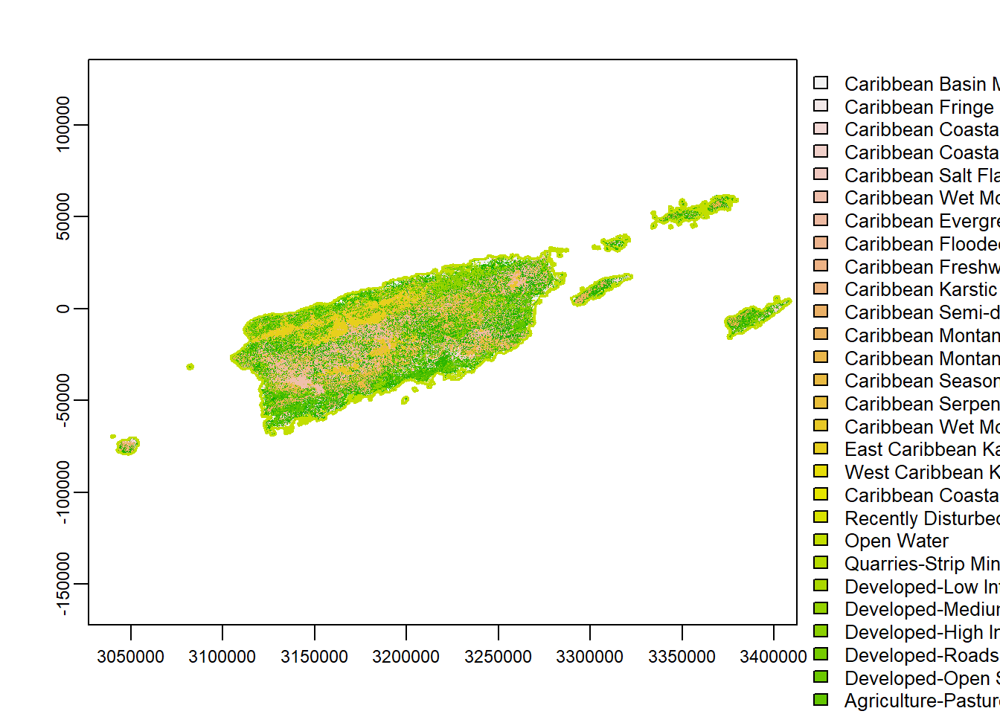
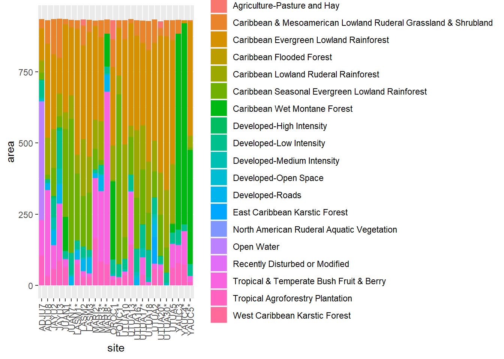

This session is to introduce loading raster data to R and performing a simple analysis on it. We will use sf, a package for handling geographic data, terra, a package for handling raster data, and the tidyverse package, which includes ggplot and other useful functions. ggplot includes functions for plotting georeferenced vector data (points, polygons, and lines), but not raster data. For this we use ggspatial.
library(sf)
library(terra)
library(tidyverse)
library(ggspatial)We load the point locations of the 25 farms + Casa Pueblo from the geographic coordinates. Geographic coordinates are based on their angle from the equator and prime meridian on a globe. These coordinates can be used to create a geographically-reference sf object using the sf package. By default, the function we are using, st_as_sf assumes we are using the WGS84 geographic coordinate system when we provide coordinates. We can define this explicitly (as shown in the code) by defining the crs argument. In the code, we use the function st_crs() to retrieve the WGS84 definition by providing the code 4326. In this case, this wasn’t actually necessary because the st_as_sf automatically assumes the WGS84 coordinate system by default since it is very commonly used. But in certain cases this needs to be defined. You can get this code and other from the website https://epsg.io/ .
We plot the points using ggplot package and the geom_sf() function. We add text labels with the function geom_sf_text_repel() (from the ggsflabel package), which automatically “repels” the text away from the point and each other, so it looks better. We add a background layer with annotation_map_tile() from the ggspatial() package.
farms <- read.csv("https://drive.google.com/uc?export=download&id=1dvNtK4ZrTTOdCIiYh9DzIgczzSSPP8yK")
head(farms)## siteName farmName lat lon
## 1 ADJU7 Baliar 18.19670 -66.83178
## 2 ADJU8 Tres Angeles/ Juan Melendez 18.22971 -66.80661
## 3 JAYU2 Roberto Atiensa 18.21610 -66.56725
## 4 JAYU3 Roberto Atiensa 18.21298 -66.56459
## 5 JUAN1 Pablo Reyes 18.12979 -66.53100
## 6 JUAN7* Iluminado I 18.11993 -66.55841farms.sf <- st_as_sf(farms,
coords = c(4, 3), # give the column numbers where the x (longitude) and y (latitude) coordinates are located
crs = st_crs(4326)) %>% # define the coordinate system. st_crs() is a function to retrieve the coordinate system by a code.
select(-farmName)
# plot the points
ggplot(farms.sf) + annotation_map_tile(zoomin = -1) + geom_sf() +
geom_sf_text(aes(label = siteName), size = 3)
We are going to use the National Vegetation Class map for Puerto Rico. This was recently completed for the 2016 land cover. It is available at: https://landfire.gov/insular_areas.php . It is found in the link in the table in the row for Puerto Rico, under the “LF 2016 Remap [LF 2.0.0]” column.
Entering the raster in the console returns some basic information about this layer, like its resolution (30m), extent, and coordinate reference system. Importantly in our case are the categories data, which shows the data that can be displayed in the raster.
In the code below, replace the path file with one that points to your downloaded LANDFIRE NVC .tif layer.
lf <- rast("C:/Users/Kevin/Documents/GitHub/PR_landscape/Data/LF2016_NVC_200_PRVI/Tif/LV16_NVC_200.tif")
lf## class : SpatRaster
## dimensions : 6768, 12846, 1 (nrow, ncol, nlyr)
## resolution : 30, 30 (x, y)
## extent : 3026925, 3412305, -119955, 83085 (xmin, xmax, ymin, ymax)
## coord. ref. : NAD_1983_Contiguous_USA_Albers (EPSG:5070)
## source : LV16_NVC_200.tif
## categories : Count, NVC_NAME, LFRDB, LFLIFEFORM, NVC_CLASS, NVC_SUBCLA, NVC_FORMAT, NVC_DIVISI, CLASS, SUBCLASS, FORMATION, DIVISION_C, DIVISION, MACROGROUP, MACROGRO_1, GROUP_CODE, GROUP, R, G, B
## name : Count
## min value : 152
## max value : 74740734plot(lf)
By default when we plot the raster it will show the first category, which is “Count”, i.e. the number of cells in a class. This isn’t very useful, so we can switch the “active” category to GROUP by defining it with the activeCat() function.
activeCat(lf) # by default `1` ## [1] 1activeCat(lf) <- "GROUP"
activeCat(lf) # now it's `17`, which is the location of "GROUP" in the order of columns## [1] 17plot(lf) # now more useful categories are shown
The package terra has functions to create buffers around points and extract land cover from a raster within those buffers.
In order to analyze the farm points and the land cover data together, they have to be in the same coordinate system, otherwise they won’t overlap, or overlap incorrectly. Therefore we are going to project both layers into the same coordinate system. I selected one from the site referenced above, see: https://epsg.io/?q=puerto+rico.
farms.vect <- vect(farms.sf) # convert the points to vect format, for the terra package
# re-project the points and land cover layers to the same coordinate system
farms.pr <- project(farms.vect, "epsg:6566") # project the points to a PR projection
lf.pr <- project(lf, "epsg:6566") # project the land fire layer to the same PR projection
# create a 500 m buffer around the points
farms500 <- buffer(farms.pr, width = 500) # buffer by 500 m
# use the terra function "extract" to isolate the cells in the land cover layer that coincide with the 500 m buffers
lf500 <- terra::extract(lf.pr, farms500, list = TRUE, touches = TRUE, xy = FALSE) %>%
lapply(table) %>% # the output of extract is a list; this summarizes each buffer into a table (still in a list)
bind_rows() %>% # output of extract is a list; this condenses all buffers into one table
bind_cols(site = farms500$siteName) # re-add the site name from the buffer layerThe columns of the output data are land use types codes. We can match them up to their more descriptive titles in the original
# the table of attributes of the land cover dataset can be accessed with the "cats()" function
lf.cats <- cats(lf.pr)[[1]] # the double brackets is because the output is a list consisting of only one dataframe. We just need to look at the dataframe, which we access using the double brackets.
# For plotting,let's make a long dataset with columns for the site and land cover type
lf500.long <- pivot_longer(lf500,
cols = `6336`:`6348`,
names_to = "ID",
values_to = "area") %>%
mutate(ID = as.numeric(ID)) %>%
left_join(lf.cats %>% dplyr::select(ID, GROUP:B), by = "ID")
# plot
ggplot(lf500.long, aes(x = site, y = area, fill = GROUP)) +
geom_bar(stat = "identity") +
theme(axis.text.x = element_text(angle = 90, vjust = 0.5, hjust=1))## Don't know how to automatically pick scale for object of type table. Defaulting to continuous.